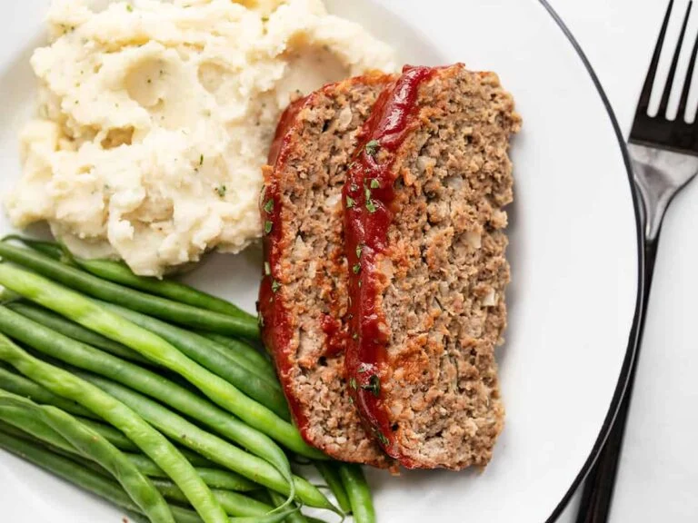

Ingredients
Meatloaf
- 1 large egg
- 1/3 cup milk
- 1 tsp Worcestershire sauce
- 1/2 cup plain breadcrumbs
- 1 tsp Italian seasoning
- 1/2 tsp garlic powder
- 1 tsp salt
- 1/4 tsp freshly cracked black pepper
- 1/2 cup minced onion
- 1.5 lbs. ground beef (85/15)
Glaze
- 1/2 cup ketchup
- 1 Tbsp brown sugar
- 1 Tbsp Worcestershire sauce
- 1 tsp yellow mustard
Steps
- Preheat the oven to 350ºF.
By pre-mixing some of the ingredients for the meatloaf so there will be less mixing required for the meat (overmixing the meat can make meatloaf tough).
in a small bowl,
whisk together ⅓ cup milk, one large egg, and 1 teaspoon Worcestershire sauce.
a separate bowl, stir together ½ cup breadcrumbs, ½ teaspoon garlic powder, 1 teaspoon Italian seasoning, ¼ tsp freshly cracked pepper, and 1 teaspoon salt.
-
Mince about a ½ cup onion. Make sure to chop or mince the onion as finely as possible. Chunky onion can make the meatloaf fall apart more easily.
-
Add the milk mixture, breadcrumb mixture, and minced onion to 1.5 lbs. ground beef (85/15).
-
Mix with your hands until everything is evenly combined. Avoid overmixing.
-
Place the meatloaf mixture on a rimmed baking sheet or baking dish and shape it into a loaf that is approximately 8″ long, 4″ wide, and 2″ tall.
-
Next, combine the ingredients for the glaze. Stir together ½ cup ketchup, 1 tablespoon brown sugar, 1 teaspoon yellow mustard, and 1 tablespoon Worcestershire sauce.
-
Spread the glaze over the top and sides of the meatloaf.
-
Bake the meatloaf in the preheated 350ºF oven for 50-55 minutes, or until the internal temperature reaches 165ºF.
Let the meatloaf rest for about 10 minutes before slicing and serving.